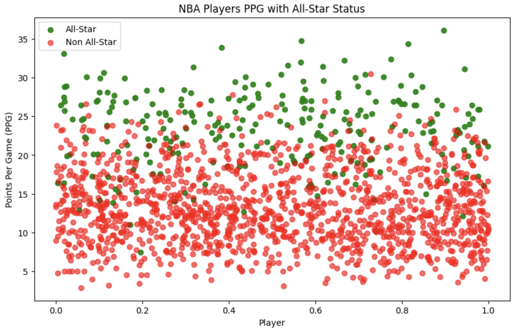
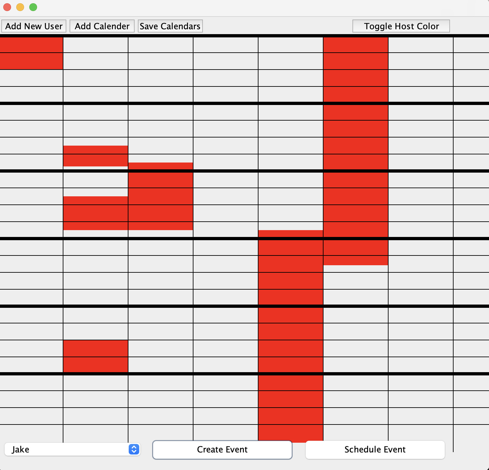

RAG Vector DB Benchmarking
Complete AI pipeline connected to 3 vector databases, bencharking end-to-end preformance

NBA All-Star Predictor
Machine learning project analyzing player statistics to predict All-Star status

Planner System
Interactive Java planner with real-time XML file integration and scheduling interface